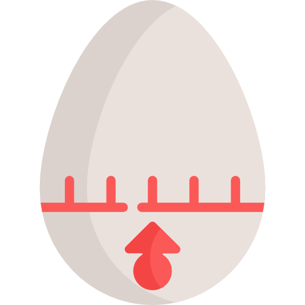
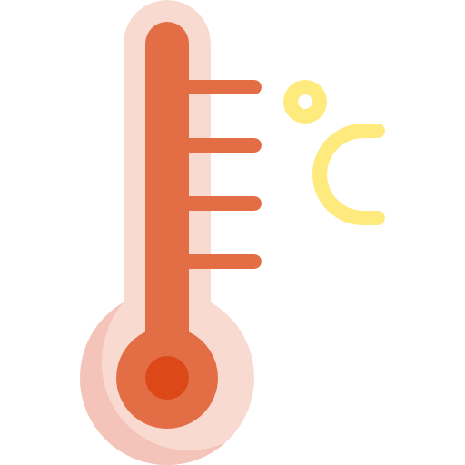
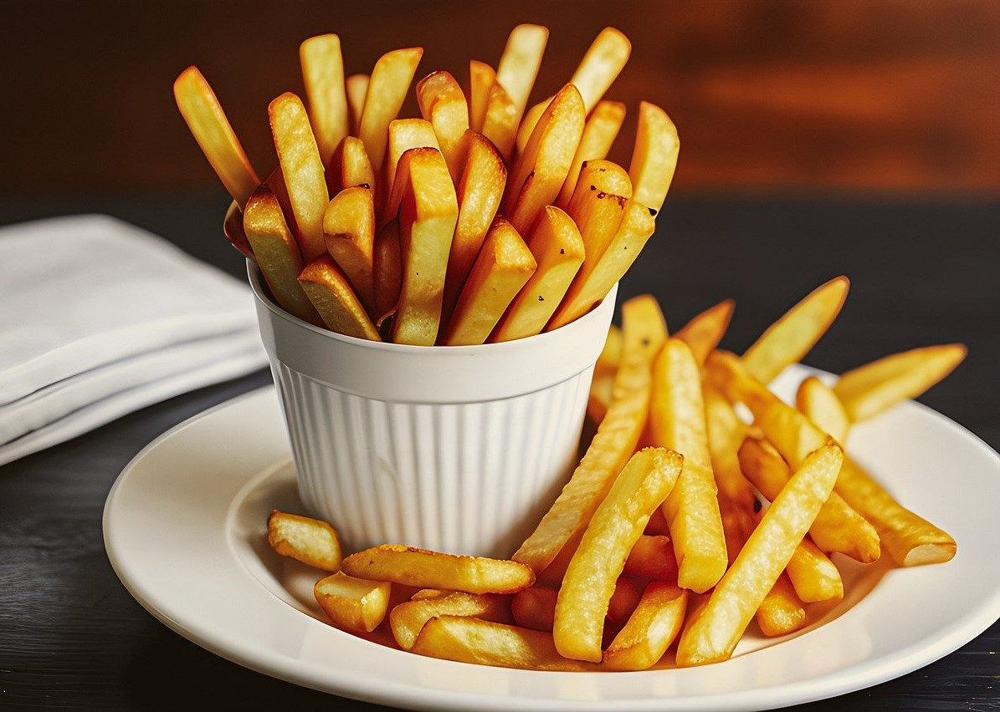
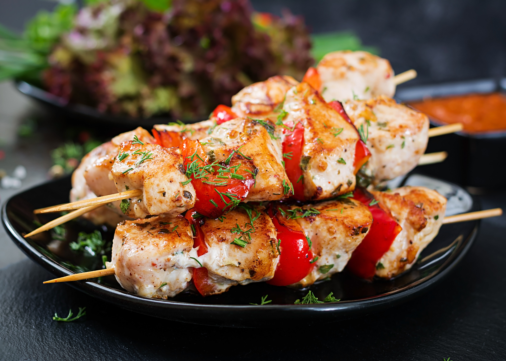

- Ingredientes
- 12 alitas de pollo
- 1/2 taza (120 ml) de salsa barbacoa (BBQ) de tu elección
- 2 cucharadas de aceite vegetal
- 1 cucharadita de ajo en polvo
- 1 cucharadita de cebolla en polvo
- 1 cucharadita de pimentón ahumado
- 1/2 cucharadita de sal
- 1/4 de cucharadita de pimienta negra molida
- Spray antiadherente para cocinar
- Tiempo 
- Preparación: 10 minutos
- Cocción: 20-25 minutos
- Temperatura 
- 200°C (390°F)
- Procedimiento
- En un tazón grande, mezcla la salsa barbacoa, el aceite vegetal, el ajo en polvo, la cebolla en polvo, el pimentón ahumado, la sal y la pimienta negra para hacer la marinada
- Limpia las alitas de pollo con papel de cocina
- Coloca las alitas de pollo en la salsa y revuélvelas bien para que se impregnen completamente
- Cubre el tazón con un paño o envoltura de plástico y deja marinar las alitas en el refrigerador durante al menos 30 minutos o hasta 2 horas para que absorban los sabores
- Precalienta tu freidora de aire
- Rocía la canasta con spray antiadherente para cocinar
- Coloca las alitas de pollo marinadas asegurándote de que no estén demasiado apretadas
- Hornea las alitas de pollo durante 20-25 minutos, volteándolas a la mitad del tiempo para que se cocinen de manera uniforme
- Una vez listas, retira las alitas de pollo y sírvelas caliente

- Ingredientes
- 4 papas grandes
- 2 cucharadas de aceite vegetal
- 1/2 cucharadita de sal
- 1/4 de cucharadita de ajo en polvo
- 1/4 de cucharadita de pimentón ahumado (opcional)
- 1/4 de cucharadita de pimienta negra molida
- Spray antiadherente para cocinar
- Tiempo
- Preparación: 10 minutos
- Cocción: 15-20 minutos
- Temperatura
- 200°C (390°F)
- Procedimiento
- Lava las papas y sécalas con papel de cocina. No es necesario pelarlas, pero si lo prefieres, puedes pelarlas
- Corta las papas en tiras delgadas de aproximadamente 1 cm de grosor. Trata de hacer que todas las tiras sean del mismo tamaño para que se cocinen de manera uniforme
- En un tazón grande, mezcla las tiras de papa con el aceite vegetal, asegurándote de que todas las tiras estén bien cubiertas
- Agrega la sal, el ajo en polvo, el pimentón ahumado y la pimienta negra a las papas. Mezcla bien para que todas las papas estén sazonadas de manera uniforme
- Precalienta tu freidora de aire
- Rocía la canasta de la freidora de aire con spray antiadherente para cocinar
- Coloca las tiras de papa en la canasta, asegurándote de que no estén demasiado apretadas
- Hornea las papas durante 15-20 minutos, agitándolas o volteándolas a la mitad del tiempo para que se cocinen de manera uniforme
- Una vez listas y doradas, retira las papas y sírvelas caliente

- Ingredientes
- 500 g de carne (pollo, ternera, cerdo) cortada en trozos pequeños
- 1 pimiento rojo, cortado en trozos
- 1 pimiento verde, cortado en trozos
- 1 cebolla, cortada en trozos
- 8 champiñones, limpios y enteros
- 1/4 de taza (60 ml) de salsa de soja
- 2 cucharadas de aceite vegetal
- 1 cucharadita de ajo en polvo
- 1 cucharadita de cebolla en polvo
- 1/2 cucharadita de pimentón ahumado
- Sal y pimienta al gusto
- Brochetas de bambú (previamente remojadas en agua)
- Tiempo
- Preparación: 15 minutos
- Marinado: 30 minutos a 2 horas (opcional)
- Cocción: 10-12 minutos
- Temperatura
- 200°C (390°F)
- Procedimiento
- En un tazón grande, mezcla la salsa de soja, el aceite vegetal, el ajo en polvo, el cebolla en polvo, el pimentón ahumado, la sal y la pimienta para hacer la marinada
- Agrega la carne cortada en trozos a la marinada y mezcla bien para que se impregne de los sabores. Si tienes tiempo, puedes marinar la carne en el refrigerador durante 30 minutos a 2 horas para que absorba los sabores
- Precalienta tu freidora de aire
- Ensarta los trozos de carne, los pimientos, las cebollas y los champiñones en las brochetas de bambú, alternando los ingredientes como prefieras
- Rocía la canasta de la freidora de aire con spray antiadherente para cocinar
- Coloca las brochetas en la canasta, asegurándote de que no estén demasiado apretadas
- Hornea las brochetas durante 10-12 minutos, volteándolas a la mitad del tiempo para que se cocinen de manera uniforme
- Una vez listas, retira las brochetas y sírvelas caliente